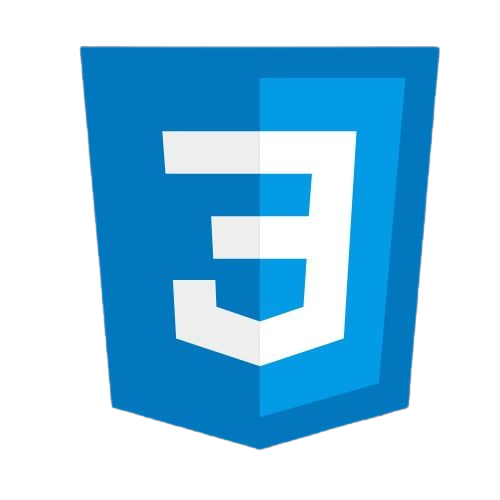
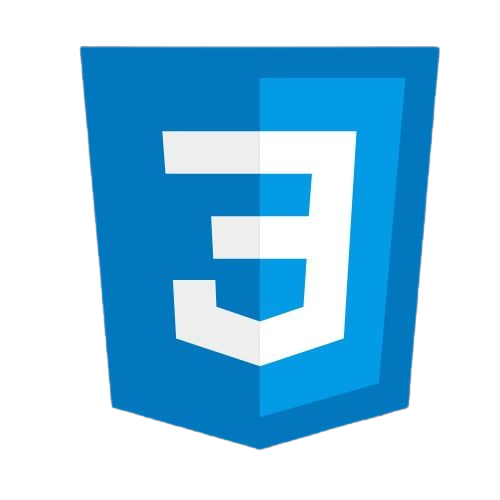
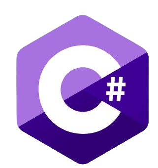
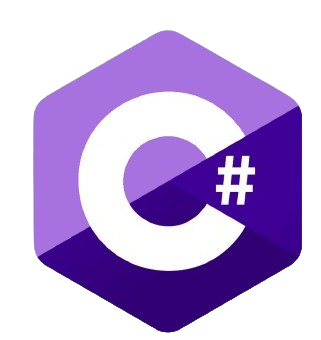

TELA DE LOGIN
FRONT-END
Projeto de uma tela de login criada com HTML, JavaScript e CSS. Possui funcionalidades de ocultar senha para maior segurança e opção de mudança de tema para personalização visual.

ESTACIONAMENTO
BACK-END
Sistema desenvolvido em C# que calcula o valor do estacionamento com base nas horas. Permite adicionar, listar, remover e mostrar veículos pelas placas, facilitando a gestão e controle de estacionamento.

CANCELAMENTOS
CIÊCIA-DADOS
Análise de dados realizada com Python e Jupyter que utiliza gráficos para demonstrar o perfil dos clientes que mais cancelam os planos da empresa, oferecendo insights valiosos para estratégias de retenção.

SCORE BANCO
IA
Inteligência Artificial criada com Python e Jupyter que calcula o score bancário dos clientes e identifica quem tem o maior score, ajudando a determinar os clientes mais promissores.
 



 
